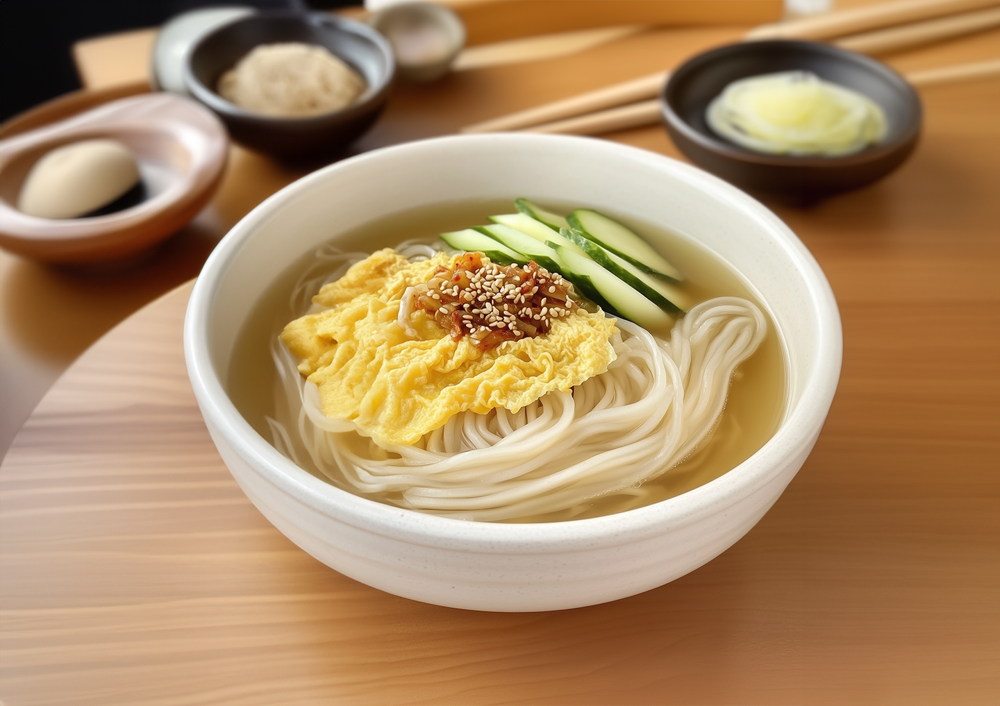
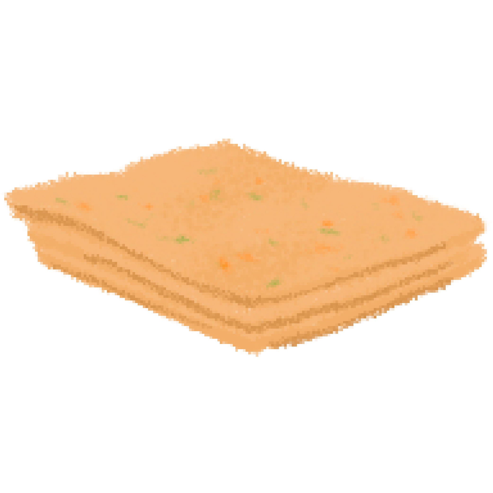

잔치국수
국수면

참기름
계란
애호박
단무지

어묵

국간장

물
1. 육수를 준비한다.
육수
육수는 다른 요리에도 자주 활용되기 때문에 한 번 끓일 때 한솥에 끓여 냉장고에 얼려 보관하는 것을 추천한다.
물과 멸치, 다시마, 대파, 양파, 무우를 넣고 뭉근하게 육수를 우린다. 대파는 뿌리까지 함께 넣고 양파는 빨간 껍질을 같이 넣어주면 맛있고 건강한 국물을 즐길 수 있다.
에 참기름을 넣고 끓인다. 참기름을 넣으면
육수육수는 다른 요리에도 자주 활용되기 때문에 한 번 끓일 때 한솥에 끓여 냉장고에 얼려 보관하는 것을 추천한다.
물과 멸치, 다시마, 대파, 양파, 무우를 넣고 뭉근하게 육수를 우린다. 대파는 뿌리까지 함께 넣고 양파는 빨간 껍질을 같이 넣어주면 맛있고 건강한 국물을 즐길 수 있다.
에
깊은 맛과 담백함이 더해진다. 국간장으로 취향껏 간을 한다.
2. 국수면을 삶는다.
1인분을 기준으로 국수면 100g을 물 1리터에 7~8분간 삶아준다.
중간 중간 물이 끓어 오르면 찬물을 조금씩 부어주면 된다. 이렇게 하면 거품도 사라지고 쫄깃한 면발도 만들 수 있다.
국수면이 적당히 익으면 찬물에 빨래를 빨듯이 문지르며 헹구어 준다.
이 과정을 통해 국수면에 남아 있던 전분이 제거되어 국수가 눌러붙지 않도록 할 수 있다.
3. 고명을 만든다.
고명은 계란, 애호박, 단무지, 어묵 등 취향대로 준비한다.
계란은 곱게 풀어 지단으로 만들고 애호박과 어묵은 채썰어서 볶는다.
단무지는 아삭한 식감을 더해주기 때문에 채를 썰어 함께 올리기 좋은 재료이다.
3. 한 데 모아서 국수를 완성한다.
삶아 둔 면에 육수를 붓고 고명을 올려주면 맛있는 잔치국수가 완성이다.
그 맛있는 음식들 중에서도 압도적으로 가장 맛있는 음식.